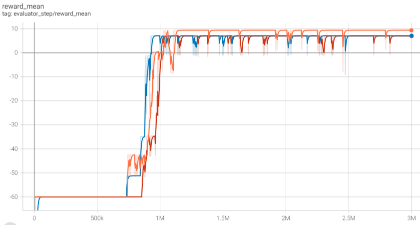

Taxi¶
Overview¶
Taxi is a discrete classic reinforcement learning environment that simulates a passenger’s travel process in the city. In this environment, the car needs to depart from one location, pick up a passenger at a location and deliver the passenger to the destination. The demonstration of Taxi environment is shown as follows:

Installation¶
Method¶
Taxi environment can be directly called through library gym, which has id Taxi-v3 。
pip install gym
Verify Installation¶
Run the following commands in python to check if installation is successful.
import gym
from gym.spaces import Discrete
env = gym.make("Taxi-v3", render_mode="rgb_array")
obs = env.reset()
print(obs)
assert env.observation_space == Discrete(500)
assert env.action_space == Discrete(6)
Introduction¶
Action space¶
Taxi environment has a discrete action space with the shape of (1, ) in range {0, 5}. This represents different operations for the taxi.
0: move downward1: move upward2: move right3: move left4: pick up passenger5: drop off passenger
The definition of action space in gym is defined as:
action_space = gym.spaces.Discrete(6)
observation space¶
The state space is also a discrete space, similar to the action space. The shape of the state is (1,) and its range is {0, 499}, totaling 500 states.
Taxi environment owns a map with the size of 5×5, wit 4 places marked in colors. The passenger begins at one of the 4 marked places or in the taxi, and the destination of the passenger is also one of the four marked locations with color labels. There are a total of 500 states. These 500 states are a summary of the states of both the car and the passenger. They are represented under the space environment definition of gym as follows:
observation_space = gym.spaces.Discrete(500)
Each state is determined by the following 4 components of information. You can view the information of each component corresponding to each state number by the following method:
obs = env.reset()
taxi_row, taxi_col, pass_loc, dest_idx = env.unwrapped.decode(obs)
The range of each element is as follows:
taxi_row: Row of taxi, among 0, 1, 2, 3, 4, representing the index of rowtaxi_col: Column of taxi, among 0, 1, 2, 3, 4, representing the index of columnpass_loc: The passenger’s location, among 0, 1, 2, 3, 4. Respetively 0, 1, 2, 3 represent red, green, yellow, blue, while 4 indicates that the passenger is in the taxi.dest_idx: The passenger’s destination, among 0, 1, 2, 3, representing red, green, yellow, blue respetively.
The encoded value of state can be calculated as (`` taxi_row * 100 + taxi_col * 20 + pass_loc * 4 + dest_idx * 1`` )
Reward space¶
-1: when the taxi moves once (including picking up the passenger at the designated location).-10: when picking up or dropping off the passenger in an abnormal situation (including: picking up a passenger before the designated location, picking up a passenger when there is already one on board, dropping off a passenger when there is no one on board, and dropping off a passenger while the car is not at the destination).+20: when successfully dropping off the passenger at the correct destination
Termination Condition¶
Each episode terminates when one of the following conditions is satisfied:
Successfully delivering the passenger. In other words, if step has no restriction, the process can only terminate when the passenger has been successfully delivered.
reached max step for each episode. This can be set through variable
max_episode_stepsin the environment.
Implementation example inside DI-zoo¶
The following code is the implementation for Taxi-v3 environment, based on DQN algorithm:
from easydict import EasyDict
taxi_dqn_config = dict(
exp_name='taxi_dqn_seed0',
env=dict(
collector_env_num=8,
evaluator_env_num=8,
n_evaluator_episode=8,
stop_value=20,
max_episode_steps=60,
env_id="Taxi-v3"
),
policy=dict(
cuda=True,
model=dict(
obs_shape=34,
action_shape=6,
encoder_hidden_size_list=[128, 128]
),
random_collect_size=5000,
nstep=3,
discount_factor=0.99,
learn=dict(
update_per_collect=10,
batch_size=64,
learning_rate=0.0001,
learner=dict(
hook=dict(
log_show_after_iter=1000,
)
),
),
collect=dict(n_sample=32),
eval=dict(evaluator=dict(eval_freq=1000, )),
other=dict(
eps=dict(
type="linear",
start=1,
end=0.05,
decay=3000000
),
replay_buffer=dict(replay_buffer_size=100000,),
),
)
)
taxi_dqn_config = EasyDict(taxi_dqn_config)
main_config = taxi_dqn_config
taxi_dqn_create_config = dict(
env=dict(
type="taxi",
import_names=["dizoo.taxi.envs.taxi_env"]
),
env_manager=dict(type='base'),
policy=dict(type='dqn'),
replay_buffer=dict(type='deque', import_names=['ding.data.buffer.deque_buffer_wrapper']),
)
taxi_dqn_create_config = EasyDict(taxi_dqn_create_config)
create_config = taxi_dqn_create_config
if __name__ == "__main__":
from ding.entry import serial_pipeline
serial_pipeline((main_config, create_config), max_env_step=3000000, seed=0)
Benchmark Algorithm Performance¶
Set the total number of iteration steps to be 300000, and randomly select three different seeds. The iteration results based on the DQN algorithm are shown in the figure below: You can see that the average evaluation reward begins to converge after about 700k - 800k steps, and the average evaluation reward is basically stable after 1M steps, where every evaluation can successfully pick up and deliver passengers.
{kind=link}